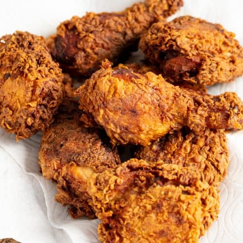

Fried Chicken

If you want to make crispy and delicious fried chicken at home, then you're going to love our recipe!
List of ingredients:
- 4 cups all-purpose flour, divided
- 2 tablespoons of garlic and salt
- 1 tablespoon of paprika
- 3 teaspoons of pepper, divided
- 2-1/2 teaspoons poultry seasoning
- 2 large eggs
- 1-1/2 cups of water
- 1 teaspoon of salt
- 2 broiler/fryer chickens (3-1/2 to 4 pounds each), cut up
- Oil for deep-fat frying
Step by step instructions:
- In a large shallow dish, combine 2-2/3 cups flour, garlic salt, paprika, 2-1/2 teaspoons pepper and poultry
seasoning.
- In another shallow dish, beat eggs and 1-1/2 cups water; add salt and the remaining 1-1/3 cups
flour and 1/2 teaspoon pepper.
- Dip chicken in egg mixture, then place in flour mixture, a few pieces at a
time. Turn to coat.
- In a deep-fat fryer, heat oil to 375°.
- Fry chicken, several pieces at a time, until chicken is golden brown
and juices run clear, 7-8 minutes on each side.
- Drain on paper towels.